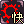
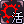
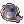
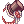
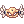
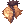
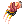

Palderon's Guide to the Self-Sufficient Sura
| This guide has not been updated in a while. | ||
|---|---|---|
| Information on this page may be obsolete and outdated. Please refer to the author for information on future updates. |
||
| Sura | |||||||||||||||||||
|---|---|---|---|---|---|---|---|---|---|---|---|---|---|---|---|---|---|---|---|
| Job Base: | Monk | ||||||||||||||||||
| Written By: | Palderon | ||||||||||||||||||
| |||||||||||||||||||
Overview
If you're reading this, you're tired of popping Steel Body, right clicking, and going to make a sandwich: tanking. You want to do more with those other 50 skills you have. You want to go solo and be a combo Sura, and this is the guide for you to do it. It will focus on helping you be the best combo Sura you can be.
Combo Sura focuses primarily on Tiger Cannon and Gates of Hell. Tiger Cannon does damage proportional to your Max HP, and Gates of Hell does damage proportional to the amount of HP you are missing, meaning high HP is your friend. You have the ability to buff, damage, tank and even heal, making you an excellent instance partner for anyone if you don't feel like going solo.
I'm still new to this server and still making my fortune to test every single piece of gear out, but like you I want to play Sura the way it was intended. Punching things in the face, not getting punched in the face. I'll do my best to add to this as I learn new things. You can also use the Discussion tab above to add input.
Stats
| Stat | Point Distribution | Effect | Notes |
|---|---|---|---|
| STR | 80~120 | Each point of STR adds:
|
One of your secondary stats. Increases your damage overall and lets you carry more. Balance this with your AGI depending on your play style and who you play with. |
| AGI | 80~120 | Each point of AGI adds:
Every 5 points adds:
Increases your ASPD |
The other secondary stat. You won't be auto attacking much, but the higher your ASPD the faster you can combo. Also the higher the Flee the more often you will dodge, allowing you to worry less about having your HP high for surviving and leaving you more room to use your HP for your attacks. |
| VIT | 120 | Each point of VIT adds:
Every 2 points adds:
Every 5 points adds:
|
This is your primary stat. Increases your HP, which in turn increases both your survivability and your damage with Tiger Cannon and Gates of Hell. |
| INT | 35 | Each point of INT adds:
Every 2 points adds:
Decreases Variable Cast Time |
This is your tertiary stat. You need SP to cast your skills and spells, and it will marginally increase your Tiger Cannon and Gates of Hell damage as well, but not enough to be worth dumping a lot of points here. On top of that, you can restore your own SP(detailed later). |
| DEX | 90 | Each point of DEX adds:
Every 5 points of DEX add:
Decreases Variable Cast Time |
You need enough DEX to hit stuff and that's it. Tiger Cannon and Gates of Hell can be used outside of a combo by casting them, and DEX increases your cast speed. However, you should be using them via Dragon Combo or Flash Combo. |
| LUK | 1~2 | Each point of LUK adds:
Every 3 points of LUK add:
Every 5 points of LUK add:
Every 10 points of LUK add:
|
Combo skills can't be critical hits. Sure some Perfect Dodge is nice, but you have more important stuff to spend points on that actually increase your damage. |
Stat Build
Start out by getting 80 STR, 80 AGI, 120 VIT, 35 INT, 90 DEX, 1 LUK. Then you can increase STR and AGI based on how you feel about your build. AGI increases ASPD, which in turn increases animation speed allowing you to combo faster.
Some people may find the timing for comboing gets hard past a certain point of ASPD, so play with your AGI to find the speed most comfortable for you when comboing. If you find yourself getting hit too much by MVPs you can also add more points into AGI. This is also very reliant on how you want to gear yourself and what classes you play with, so use your own judgement to move around points as you need. If you play with an Arch Bishop, you may find you don't need as much AGI for the Flee and can put more into STR. On the other hand if you play with a Sorcerer who's willing to restore your SP, perhaps you want to max out AGI so you can combo as fast as you can. Additionally certain gear may add to your AGI or ASPD, causing you to need less to stay in your 'sweet spot'.
Skills
First Job Skills
| Skill | Effect | Notes |
|---|---|---|
 Divine Protection Lv 10 Divine Protection Lv 10
|
Passive
|
This is a prequisite to all Monk skills. |
 Demon Bane Lv 10 Demon Bane Lv 10
|
Passive
|
Like the above, also a prerequisite for Monk skills. |
 Increase Agility Lv 10 Increase Agility Lv 10
|
Castable Buff
|
+12 AGI for yourself (and that Ranger friend you keep instancing with). |
 Blessing Lv 10 Blessing Lv 10
|
Castable Buff
|
+10 STR/INT/DEX makes you your own buff machine. |
 Pneuma Lv 1 Pneuma Lv 1
|
Ground Targeted
|
Not necessary but nice if you're getting pelted by ranged attacks and you don't have an AB with you. Also lets you protect that aforementioned Ranger friend avoid Hell's Judgement (an MVP spell that counts as a ranged attack when standing at a distance of 5 or more cells away) while you're duoing. |
Second/Trans Job Skills
| Skill | Effect | Notes |
|---|---|---|
 Dodge Lv 5-10 Dodge Lv 5-10
|
Passive
|
Not as powerful as the Thief version, but there's still no reason not to get this and eat less hits. |
 Body Relocation LV 1 Body Relocation LV 1
|
Active Skill
|
Because if you're not snapping, you're not a Monk. Consumes a spirit sphere to cast unless you're in Critical Explosion. |
 Steel Body Lv 3-5 Steel Body Lv 3-5
|
Self Buff
|
As much as we all hate it, sometimes you just have to turn this on and get punched in the face. Casting will consume 5 Spirit Spheres. |
 Dangerous Soul Collect Lv 1 Dangerous Soul Collect Lv 1
|
Self Buff
|
Transcendent skill only. This summons 5 Spirit Spheres at once, or all 15 Spheres while under the effect of Rising Dragon. |
 Iron Hand Lv 5-10 Iron Hand Lv 5-10
|
Passive
|
Only necessary to max if you want to use fist weapons (more on that under equipment), otherwise you only need 5 points as prerequisite. |
 Asura Strike Lv 3-5 Asura Strike Lv 3-5
|
Damage Skill
|
You only need 3 points as a prerequisite, however you can move points here if you want. You will have enough SP for this to do decent damage at the end of a combo, about as much as a Tiger Cannon. However there are builds dedicated to maxing the damage of Asura Strike if you wish to go that route. Requires you to be in Critical Explosion status and consumes 5 Spirit Spheres unless used at the end of a combo. |
 Triple Attack Lv 5-10 Triple Attack Lv 5-10
|
Passive/Combo Skill
|
The first Monk combo skill. As you put points in this the damage increases but the chance to proc goes down, which is a good thing because Triple Attack can't proc other effects like Gentle Touch Energy Gain so you don't want it to proc frequently. You only need 5 points but I recommend the full 10 to reduce the proc chance while still increasing your overall damage. |
 Chain Combo Lv 3 Chain Combo Lv 3
|
Combo Skill
|
Your second Monk combo skill. Used right after Triple Attack procs. You only need 3 points here as a Sura since you'll never use this, but when leveling as a Monk you can put the full 5 in. |
 Combo Finish Lv 3 Combo Finish Lv 3
|
Combo Skill
|
The third Monk combo skill, this one follows Chain Combo. Again you only need 3 points for Sura, but leveling as Monk feel free to put 5. Consumes 1 Spirit Sphere when cast. |
 Critical Explosion Lv 5 Critical Explosion Lv 5
|
Self Buff
|
This is an important buff for Monks and you are required to be in Critical Explosion for various skills. Casting this will consume 5 Spirit Spheres. Rising Dragon will put you into Critical Explosion state without needing to cast this separately. |
Third Job Skills
| Skill | Effect | Notes | |
|---|---|---|---|
 Dragon Combo Lv 3~5 Dragon Combo Lv 3~5
|
Combo Skill
|
The first of your new combo skills. This is a targetable instant cast that does not require Triple Attack (but can still be used as a combo after it). This allows you to start a combo instantly on any target. | |
 Fallen Empire Lv 1~10 Fallen Empire Lv 1~10
|
Combo Skill
|
The second new combo skill. Use this after Dragon Combo. The timing will depend on your ASPD. | |
 Tiger Cannon Lv 10 Tiger Cannon Lv 10
|
Damage Skill (AOE) / Combo Skill
|
One of your main attacks, consumes a large chunk of your HP to do massive damage. Use this right after Fallen Empire. Damage is based on HP, ATK, and to a lesser extent SP. Part of this damage ignores the HIT check, allowing you to hit even MVPs under AGI UP. Requires you to be in Critical Explosion and consumes 2 Spirit Spheres on use. | 
|
 Gates of Hell Lv 10 Gates of Hell Lv 10
|
Damage Skill / Combo Skill
|
Your other main attack, this one deals more damage the more HP you have missing. Like Tiger Cannon, this is used after Fallen Empire, and part of this damage ignores HIT check. Consumes 5 Spirit Spheres on use. Level 1-4 is resolved as a melee attack and blocked by Safety Wall, while level 5-10 is resolved as a ranged attack and blocked by Pneuma. | 
|
 Flash Combo Lv 5 Flash Combo Lv 5
|
Damage Skill
|
Lets you automatically use your Tiger Cannon combo without consuming HP, but at the cost of less damage. If Fallen Empire kills the target Tiger Cannon will not go off, so don't bother using on low hp targets (unless you're feeling lazy). This will consume 5 Spirit Spheres at level 1 and 2, 4 Spirit Spheres at level 3 and 4, and 3 Spirit Spheres at level 5. | 
|
 Sky Net Blow Lv 1-5 Sky Net Blow Lv 1-5
|
Damage Skill (AOE)
|
Hits all enemies in an area around you, knocking them back. Damage increases with AGI. Does not require Spirit Spheres to cast, and is easy to spam, making it a good leveling skill. However, ultimately the damage falls very short of Tiger Cannon. | |
 Cursed Circle Lv 1-5 Cursed Circle Lv 1-5
|
Active Skill (AOE)
|
This is the ultimate crowd control skill. All enemies hit will just stand there and do nothing for the duration. When with people you can make large groups of mobs easy to kill. When on your own, you can use this to delay for a couple seconds if waiting for a skill to cool down. | |
 Power Absorb Lv 1 Power Absorb Lv 1
|
Active Skill
|
Consumes your Spirit Spheres to regain 1% SP per Sphere. This skill is a 5x5 AOE, and will only consume your own Spheres outside of pvp. It will hit other players in a pvp setting. | |
 Rising Dragon Lv 10 Rising Dragon Lv 10
|
Self Buff
|
Increases your Spirit Sphere capacity to 15, instantly summons all Spheres and gives you 12% more HP/SP, an amazing self buff. It does slowly eat away at your HP, but not fast enough for it to be a big deal. | |
 Earth Shaker Lv 2 Earth Shaker Lv 2
|
Damage Skill (AOE)
|
You only need 2 points as a prerequisite, but you can effectively replace Ruwach on your bar with this. | |
 Gentle Touch - Energy Gain Lv 3-5 Gentle Touch - Energy Gain Lv 3-5
|
Self Buff
|
Allows you to punch stuff to regain Spirit Spheres. If you run out of Spirit Spheres mid-fight, this buff will allow you to regain them by auto attacking for a few seconds. This does NOT work with skills. | |
|  Gentle Touch - Cure Lv 1-5 | Healing Skill
|
A one-point wonder, it'll remove a ton of status afflictions. You can even remove Petrify, Frozen and Stun while afflicted by them. You can consider 5 points for a decent heal, it's based on HP% and you have a lot of that. | |
 Gentle Touch - Convert Lv 0-5 Gentle Touch - Convert Lv 0-5
|
Castable Buff
|
Provides a large ATK boost, especially at 120 STR. DO NOT cast this on yourself though, as it drops your Max HP by a very large amount, resulting in a large damage loss on Tiger Cannon. This is an excellent buff to use on Rangers and Guillotine Cross' as long as they have enough HP to survive any AOEs that might hit them. At level 5, its 2 minute long cooldown means you can only keep it on two people. | |
|  Gentle Touch - Revitalize Lv 0-5 | Castable Buff
|
Gives a large boost to your HP, +10% at max level. At 120 VIT it also gives you +150 Soft DEF. An excellent self buff, but also a great buff for any Rune Knights and Royal Guards you're running with. Also has a 2 minute long cooldown at level 5, meaning you can only keep it on two people. | |
Builds
Notice: In all these build examples Pneuma is taken. This is optional (but recommended if you don't have an Arch Bishop with you). In this case you do not have enough points to get all your first job skills, leaving you with 8/10 points in Blessing. 2 spare points from second job are used to finish getting Blessing to 10/10. If you opt to not take Pneuma, you will have sufficient points to get Blessing without second job points.

Tiger Cannon Only w/ Gentle Touch - Energy Gain
This build foregoes Gates of Hell in favour of steadier damage at full HP. Optimal for people who don't like letting their HP get low or have a high ping time. Your goal is to combo Tiger Cannon (Dragon Combo -> Fallen Empire -> Tiger Cannon) then use Flash Combo while it cools down. With some HP leeching gear you should be able to keep your HP up, and if it starts getting too low then continue to use Flash Combo instead of Tiger Cannon to do damage without the HP consumption. If you want to use minimal consumables, you can opt for spamming Flash Combo. This will result in less damage but will not drain your HP and will consume less SP.
You have 4 points left over that you can place into Cursed Circle for crowd control, Dragon Combo for more combo damage, or Sky Net Blow for more Flash Combo damage. You can also move 5 points out of Iron Hand if not using fist weapons, probably into Heal; and 2 points from Steel Body into Asura Strike if you prefer to have that option open.

Tiger Cannon Only w/ Gentle Touch - Revitalize
This changes your self buff from Energy Gain to Revitalize. You no longer gain Spirit Spheres while attacking, but your Max HP is much higher and you gain some bonus Soft DEF. With the left over points you have a few options. You can opt to spend them to get Flash Combo, if you do this you can only get Lv 4 of Revitalize. You can also max out Revitalize and then put those points into Cursed Circle for crowd control, or Fallen Empire/Dragon Combo for more damage. This is an excellent build when partnering with Rune Knights and Royal Guards.

This build alternates between Tiger Cannon and Gates of Hell, slowly eating away at your HP. This is for people comfortable maintaining low levels of health and have plenty of consumables. Alternate between comboing into Tiger Cannon and Gates of Hell. Your SP in particular will drop super fast, so have SP pots ready. An Incubus pet can be of a lot of help here.
The left over skill points can be added to Fallen Empire and Dragon Combo to increase combo damage, to Flash Combo for a second Tiger Cannon while the primary skill is on cooldown, or to Cursed Circle for more crowd control.
Equipment
Gear will be labeled into 'Offensive' (pure attack gear), 'Defensive' (pure defensive gear), 'Balanced' (something inbetween), and 'Leeching' (for HP/SP leeching). You should build yourself according to your play style. If you want to spend less on potions, use more leeching gear. If you are playing with a friend who provides a lot of damage you can build more defensive. If you find you are able to stay at full HP and want to kill faster, swap in more offensive pieces. PVP gear may be added in the future, but right now I'm focused on getting all my PVE gear tested out.
Level 125 Gear
This is a fairly cheap, easy to get set of gear ideal for people starting out. Some of it can be obtained before 125, and you should try to have all of it by 130 to make your leveling life much easier.
| Item | Slot | Location | Notes |
|---|---|---|---|
 Rideword Hat [1] Rideword Hat [1]
|
Upper | Quest | This isn't 'cheap', but it's a great leveling hat for nearly every class and worth having one in your bank to pass around between chars. Procs HP and SP leech. |
 Thanatos Hammer [1] Thanatos Hammer [1]
|
Weapon | Ghost Palace | 180 ATK +6 INT +6 VIT -6 LUK. Creates a low chance of regaining HP and SP from 5% of your damage dealt while you are Physically attacking. Consumes 100 HP every 10 seconds. Consumes 1,000 HP when unequipped. Easy to get from Ghost Palace at level 120, an excellent leveling weapon that can proc HP and SP leech. Throw a Hunter Fly Card in it for even more sustainability. |
 Platinum Shield [0] Platinum Shield [0]
|
Shield | Sword Guardian | Reduces damage from Medium and Large size monsters by 15% and from Undead by 10%. A fairly cheap shield that essentially has a built in Hodremlin Card. |
 Armour of Airship [0] Armour of Airship [0]
|
Armour | Airship Assault | +1 All Stats, +1000 HP, +100 SP. Full set bonus gives another 25% HP/SP. Drops in Airship Assault instance, any monster can drop it so you don't even need to defeat the MVP. |
 Manteau of Airship [1] Manteau of Airship [1]
|
Garment | Airship Assault | +20 FLEE, +10% Neutral resistance and even a card slot. An excellent garment on its own. Also drops in Airship Assault. |
 Boots of Airship [0] Boots of Airship [0]
|
Boots | Airship Assault | +1 AGI and +10% ASPD, not very good on its own but the full set bonus is amazing and worth it. And as you may have guessed, also drops in Airship Assault. |
 Silverwork Bracelet [1] Silverwork Bracelet [1]
|
Accessory | Old Glast Heim Treasure Room | +1 All Stats, +3 MDEF, and a slot. Simple, cheap and effective until you get something better. |
 Black Rosary [1] Black Rosary [1]
|
Accessory | Wraith Dead | At +15 MDEF, a high magic resistance option. |
Headgear
| Item | Slot | Type | Location | Notes |
|---|---|---|---|---|
| Rideword Hat [1]
|
Upper | Leeching | Quest | Chance to Leech HP/SP off your attacks. Doubles if +9. |
|  Modified Corsair [1] | Upper | Balanced | Eden Group Synthesis | +5% HP and +1 VIT, more health and more TC/GoH damage. |
|  Dress Hat [1] | Upper | Offensive | Cash Shop | +1 STR/INT +2% ATK/MATK +7 MDEF. Some good offensive stats with bonus magic defense, particularly good if you have over 600 ATK. |
| Upper | Defensive | Cash Shop | +5 MDEF, +5% Neutral resistance and +5% Ranged resistance, good all-around tanking piece. | |
 Ancient Decoration of Rift [1] Ancient Decoration of Rift [1]
|
Upper | Balanced | Infinite Space | Can be enchanted with up to +10% HP and has a base of +1000 HP, making for a lot of extra HP |
 Asgard Blessing [1] Asgard Blessing [1]
|
Upper | Defensive | Cash Shop | +2 all stats and 5% resistance to all elements. Also recovers 2% HP and 1% SP every 10 seconds. |
 Large Hibiscus [1] Large Hibiscus [1]
|
Upper | Defensive | Cash Shop | +15 MDEF, if you need any magic protection. |
 Abysmal Knight Helm [1] Abysmal Knight Helm [1]
|
Upper | Defensive | Cash Shop (Military Hat Box) | -10% Boss damage, +5% Normal damage. Your basic MVP tanking headpiece. |
 Monocle [1] Monocle [1]
|
Middle | Balanced | Owl Viscount Owl Marquis Time Holder |
Your cheapest slotted mid option. No stats, just a slot. |
 Black Frame Glasses [1] Black Frame Glasses [1]
|
Middle | Defensive | Cash Shop + Spiritual Auger | +2 MDEF +1 INT, gives a little bit of magic defense. |
 Evil Wing Ears [1] Evil Wing Ears [1]
|
Middle | Offensive | Quest + Spiritual Auger | +1 STR, your offensive mid slot option. |
 Robo Eye [0] Robo Eye [0]
|
Middle | Offensive | Cash Shop | +2% ATK/MATK +1 DEX. This is optimal if you have over 600 ATK. Otherwise slotted with a Essence of Evil STR is better. |
|  Angel Spirit [0] | Middle | Offensive | Cash Shop | Same as Robo Eyes, but +1 STR instead of DEX. |
 Umbala Spirit [0] Umbala Spirit [0]
|
Lower | Balanced | Cash Shop | +1% HP |
 Pirate Dagger [0] Pirate Dagger [0]
|
Lower | Offensive | Cash Shop | +5 ATK |
 Gangster Scarf [0] Gangster Scarf [0]
|
Lower | Offensive | Quest | +5 ATK |
 Well-Chewed Pencil [0] Well-Chewed Pencil [0]
|
Lower | Balanced | Cash Shop | +3% HIT +2 DEX, This is just if you need more hit for an MVP. |
 Blood Sucker [0] Blood Sucker [0]
|
Lower | Leeching | Cash Shop | Need more HP leech? Here's a good option. However, it disables natural HP recovery. |
| Item | Slot | Type | Notes |
|---|---|---|---|
| Card | Balanced | +1% HP per 2 refines, possibly the best in slot if you happen to have a +8 headgear laying around. | |
| Card | Balanced | +10 ATK and can proc perfect dodge, a good balanced card. | |
| Card | Offensive | +10 ATK but without the perfect dodge proc, instead you get bonus drops. Use this as a cheap offensive option. | |
| Card | Defensive | +15% Shadow and Undead resistance, if you're having trouble with Dark Grand Cross and don't want to sacrifice your Pecopeco for a Bathory Card, try this. | |
| Card | Defensive | You can't remove your own Silence with Gentle Touch Cure, so this card can make you immune to it. If you don't want to carry around Silence healing items. | |
 Essence of Evil STR 3 Essence of Evil STR 3
|
Card | Offensive | +4 STR +12 ATK -4 INT. Gives slightly more ATK over a Duneyrr Card at the cost of some SP. |
 Essence of Evil VIT 3 Essence of Evil VIT 3
|
Card | Defense | +4 VIT +12 DEF +8 MDEF -4 AGI. I was hesitant about the loss of AGI at first, but the health and defense gain is totally worth it. |
 Essence of Evil DEX 3 Essence of Evil DEX 3
|
Card | Balanced | +4 DEX +8 HIT -4 LUK, an option if you need more HIT for an MVP. |
Armor
| Item | Slot | Type | Location | Notes |
|---|---|---|---|---|
 Glorious Suit [0] Glorious Suit [0]
|
Armour | Offensive | Battlegrounds | Gives you straight up +20% HP, but has no slot and low base defense. |
| Hero Judgement Shawl [1] | Armour | Balanced | Prize of Hero | +5% HP/SP, +10 ATK/MATK, +10 HIT, +10 FLEE, a slot, and can proc level 10 Kyrie Eleison. This armour is a little bit of everything.
With Kyrie active from this armour, you can cast Dangerous Soul Collect mid-fight uninterrupted to restore your spheres. |
|  Boitata Armour [1] | Armour | Defensive | Boitata | +5% HP, +5 FLEE, +3 MDEF, and +7% Neutral resistance. |
 Abusive Robe [1] Abusive Robe [1]
|
Armour | Offensive | Honour Tokens | Ignore +4% DEF of Demi-Human, Demon and Undead with each refine. Enchant with Stamina Nive, but be aware it requires your armour to be refined to +7. |
| Item | Slot | Type | Notes |
|---|---|---|---|
| Card | Balanced | +10% HP. This is straight up your best armour card. More damage, more survivability. |
Weapons
| Item | Slot | Type | Location | Notes |
|---|---|---|---|---|
| Thanatos Hammer [1]
|
Weapon | Leeching | Ghost Palace | 180 ATK +6 INT +6 VIT -6 LUK. Creates a low chance of regaining HP and SP from 5% of your damage dealt while you are Physically attacking. Consumes 100 HP every 10 seconds. Consumes 1,000 HP when unequipped. Chance to Leech HP/SP off your attacks. Easily obtained from Ghost Palace. Keep one around with a Hunter Fly Card in-case of emergency. |
 Robot's Mechanical Arm [2] Robot's Mechanical Arm [2]
|
Weapon | Offensive | Charleston Crisis | 195 ATK +20 Crit, indestructible. A nice hefty fairly cheap mace with two slots. |
 Crimson Mace [2] Crimson Mace [2]
|
Weapon | Offensive | Multiple Drops | 80 ATK, ATK + (Upgrade Level * Upgrade Level) up to a maximum Upgrade Level of 15, indestructible. If the user's base level is 70 or higher, for every 10 base levels, ATK + 5. Crimson weapons get stronger with refine, making this a beast at +15 refine.
The element of the weapon should correspond to whatever you are killing. In general Holy weapons are highly demanded for most end game instances which are often against Demons and Undead. Neutral element is a good starting element as it's useful against everything but Ghosts. Shadow is generally lack-luster with most end game enemies being strong to it. But remember, using an elemental converter you can make any weapon Fire/Water/Earth/Wind as needed. |
|  Crimson Knuckle [2] | Weapon | Offensive | Multiple Drops | 100 ATK, ATK + (Upgrade Level * Upgrade Level) up to a maximum Upgrade Level of 15, indestructible. If the user's base level is 70 or higher, for every 10 base levels, ATK + 5.
Tired of being shoehorned into using maces? I got you covered. The bonus damage from Crimson weapons ignores size modifiers (this is why DD GX is so good with Crimson Daggers). This means you can use a Crimson Knuckle with a marginal damage loss in exchange for a slight attack speed boost and +100% cool rating. |
 Vicious Mind Mace [1] Vicious Mind Mace [1]
|
Weapon | Offensive | Sky Fortress | 130 ATK, ATK + (Upgrade Level * Upgrade Level) up to a maximum Upgrade Level of 15, indestructible. Vicious Mind Weapons work like Crimson, except they're level 4 weapons and get 3 random enchants, but lose a card slot. Are they worth it? Potentially depending on how good your enchants are. Ask yourself "Are these enchants worth giving up a card slot for?".
Best enchants to look for are +7 or more STR/VIT and +Damage or DEF Bypass to common enemy types (Undead and Demons are often found in end game instances). Also watch for ones with elements, especially Holy. |
| Vicious Mind Knuckle [1] | Weapon | Offensive | Sky Fortress | 150 ATK, ATK + (Upgrade Level * Upgrade Level) up to a maximum Upgrade Level of 15, indestructible. Fist weapon: See Crimson Knuckle, Vicious Mind weapon: See above. |
| Item | Slot | Type | Notes |
|---|---|---|---|
| Card | Leech | Throw one or two of these into a Thanatos or Crimson Weapon and never worry about HP again. | |
| Card | Offensive | +25% damage to bosses, your basic boss killing card. | |
| Card | Offensive | Obtained via Old Glast Heim. Expensive, especially combined with its partner Khalitzburg Knight, but gives you a great amount of damage against anything that isn't small size. +15 ATK and +20% damage vs Medium and Large enemies, boosted to +35% when comboed with Khalitzburg Knight Card. |
Shields
| Item | Slot | Type | Location | Notes |
|---|---|---|---|---|
 Valkyrja's Shield [1] Valkyrja's Shield [1]
|
Shield | Defensive | Valkyrie | 80 DEF, +20% Water/Fire/Undead/Shadow resistance and +5 MDEF. Comes in handy vs Dark Grand Cross and Waterball spamming MVPs. |
 Royal Guard Shield [1] Royal Guard Shield [1]
|
Shield | Defensive | Honour Tokens | 30 DEF, +10 DEF/+1 MDEF per refine, at +7 this becomes the highest defense shield. Also lets you cast [Shield Spell Lv 1]. |
 Bradium Shield [1] Bradium Shield [1]
|
Shield | Defensive | Bradium Golem | A base DEF of +98 and bonus +500 HP makes this one of your most purely defensive shields until a highly refined Royal Guard Shield overtakes it. |
 Immune Shield [1] Immune Shield [1]
|
Shield | Defensive | Proof of Loyalty | Worthless before +7, but after that becomes a bastion of neutral defense. At +5 it gives +1% Neutral resistance per refine and at +7 gives a flat +5% Neutral resistance. If you get it up to +9 it'll throw in +5% Fire/Earth/Water/Wind resistance. |
 Mad Bunny [1] Mad Bunny [1]
|
Shield | Offensive | Cash Shop | +5% ATK/MATK. If upgrade level is +7 or higher, +5 ATK/MATK. If upgrade level is +9 or higher, additional +15 ATK/MATK. Offers nothing for base defense, but gives a lot of ATK especially if you can get it to +9. |
| Item | Slot | Type | Notes |
|---|---|---|---|
| Card | Defensive | Your basic general-purpose defensive card. 15% resistance to all sizes of monsters. | |
| Card | Defensive | Obtained via Old Glast Heim. Combined with its partner, White Knight, this gives a massive amount of damage reduction against anything not considered 'small'. +20 DEF and 25% resistance to Medium an Large monsters, which goes up to 30% when paired with a White Knight Card. | |
| Card | Balanced | Worth a mention because reflect counts as melee attacks, which can proc on hit effects such as Hero Judgement Shawl or Gentle Touch - Energy Gain. This could potentially keep you full of Spheres and always have Kyrie up. Still needs testing. |
Garments
| Item | Slot | Type | Location | Notes |
|---|---|---|---|---|
 Rift Manteau [1] Rift Manteau [1]
|
Garment | Balanced | Infinite Space | +300 HP base, and can be enchanted with up to +10% HP. |
 Giant Snake Skin [1] Giant Snake Skin [1]
|
Garment | Offensive | Faceworm Nest | Special STR, AGI VIT and even LUK all work. For other enchants you want STR or VIT. If you're just starting out don't be afraid to get a cheap one with INT or DEX on it too, the most important part is the +15% HP from the combo bonus with Temporal Boots, you can work on getting a better one later. In total a perfect GSS can give you up to +18 stats. |
 Heroic Backpack [1] Heroic Backpack [1]
|
Garment | Defensive | Proof of Loyalty | Provides multiple bonuses based on your stats and the refine level, for Sura the main ones would be:
The primary reason for choosing this over GSS is the nice neutral resistance bonus, but has to be at least +7. |
| Item | Slot | Type | Notes |
|---|---|---|---|
| Card | Offensive | +5 ATK per 10 BASE STR, is +50 ATK at 100 STR, this becomes more optimal the higher your STR is. | |
| Card | Balanced | +200 HP every 10 BASE VIT, as you will have 120 VIT this is worth 2400 HP. This is worth slightly less damage overall than Wakwak with 100-120 STR, but adds to your survivability as well. If you have lower than 90 STR, this would be the superior card for damage. | |
| Card | Defensive | +20% Neutral resistance, your basic tanking card for garments. |
Boots
| Item | Slot | Type | Location | Notes |
|---|---|---|---|---|
 Temporal Boots of VIT [1] Temporal Boots of VIT [1]
|
Boots | Offensive | Old Glast Heim | Some people say Boots of STR instead, I say hogwash, there's better slots to get your ATK from, don't pass up +8% HP.
Total bonus for Temporal Boots + GSS combo depends on your GSS, but generally looking at around +16 stats, +23% HP, +5% SP before refining and enchanting. You want STR enchant for the boots, which will become Fighting Spirit 6/7 as you upgrade it (the base boot bonuses are worth 6.25 ATK vs 1% HP, where as the enchant is worth 12 ATK vs 1% HP, making the ATK enchant good enough to be better than %HP). The optimal special enchant will be Bear's Might. |
 Temporal Boots of STR [1] Temporal Boots of STR [1]
|
Boots | Offensive | Old Glast Heim | Only an option if you go 120 BASE STR. These might give very slightly more overall damage than the VIT boots, primarily through Fallen Empire which doesn't get any bonus from HP. You do however lose a lot of HP choosing these over VIT boots and %HP scales better with more VIT/HP gear than flat ATK bonuses.
Same with VIT boots, you want STR enchant and Bear's Might. |
 Enhanced Variant Shoes [1] Enhanced Variant Shoes [1]
|
Boots | Balanced | Proof of Loyalty | +12% HP/SP.
A +7 Heroic Backpack combined with these boots gives a total of +20 ATK, +5% Neutral resistance and +12% HP/SP. Rift Manteau combined with these boots gives up to +22% HP and +300 HP. |
| Item | Slot | Type | Notes |
|---|---|---|---|
| Card | Balanced | +10% HP and +1 VIT | |
| Card | Balanced | +8% HP/SP, an option if you feel you need more SP. | |
| Card | Balanced | +10% HP/SP and +2 STR, but only if you have +9 boots. |
Accessories
| Item | Slot | Type | Location | Notes |
|---|---|---|---|---|
 Hero Ring [0] Hero Ring [0]
|
Accessory | Balanced | Hero Tokens | I haven't been playing long enough to get this yet, but it looks like it could potentially be best in slot with an amazing +5 VIT, +5% HP and +5% ATK. |
 Pendant of Maelstrom [1] Pendant of Maelstrom [1]
|
Accessory | Offensive | Nightmarish Jitterbug | +6% ATK/MATK and +1 All Stats. Also autocasts Maelstrom. |
 STR Glove [1] STR Glove [1]
|
Accessory | Offensive | Eclage Dailies | +1 ATK per 10 STR. This is worth more ATK compared to the above +%ATK bonuses when you have lower ATK and are just starting out, but by the time you have +15 weapons this will be obsolete. |
 VIT Glove [1] VIT Glove [1]
|
Accessory | Balanced | Eclage Dailies | Unlike the above, HP never goes obsolete for you. +600 and +1% HP. |
 Glorious Ring [0] Glorious Ring [0]
|
Accessory | Defensive | Battlegrounds | +300 HP and +10% Water/Fire/Wind/Earth resistance. A good option for tanking, and adds some damage combined with the Medal of Honour. |
 Medal of Honour (Acolyte) [0] Medal of Honour (Acolyte) [0]
|
Accessory | Balanced | Battlegrounds | +5% ATK/MATK, MDEF +6 and +600 HP, with a chance to silence things with your fist. |
 Sheriff's Left Badge [1] Sheriff's Left Badge [1]
|
Accessory | Balanced | Fistful of Zeny Quest | +3% ATK if STR is 90 and +1000 HP if VIT is 90, plus a slot. This newly released accessory can make an easy to get alternative to the Medal of Honour. |
| Item | Slot | Type | Notes |
|---|---|---|---|
| Card | Balanced | +2 VIT, simple and cheap. | |
| Card | Offensive | +3 STR, another simple and cheap card. | |
| Card | Offensive | +20 ATK at the cost of -1% HP. Nice ATK boost but I wouldn't sacrifice the HP. | |
| Essence of Evil STR 3
|
Card | Offensive | +4 STR +12 ATK -4 INT, a better option to the above, nearly the same ATK but you sacrifice the less important SP instead of HP. |
| Essence of Evil VIT 3
|
Card | Defense | +4 VIT +12 DEF +8 MDEF -4 AGI. I was hesitant about the loss of AGI at first, but the health and defense gain is totally worth it. |
| Essence of Evil DEX 3
|
Card | Balanced | +4 DEX +8 HIT -4 LUK, an option if you need more HIT for an MVP. |
Pets
| Item | Slot | Type | Notes |
|---|---|---|---|
 High Orc High Orc
|
Pet | Offensive | +25 ATK, it's hard to beat that. |
 Little Isis Little Isis
|
Pet | Offensive | +4% ATK, you need about 600 ATK for this to be better than High Orc. |
 Succubus Succubus
|
Pet | Leeching | +1% HP and HP Leeching, excellent choice if you want to stay at full HP. |
 Incubus Incubus
|
Pet | Leeching | +5% SP and SP Leeching, the choice if you don't want to worry about SP. |
| Angeling | Pet | Balanced | +2% HP and +8% Heal efficiency. |
 Loli Ruri Loli Ruri
|
Pet | Balanced | +3% HP, even more HP and a chance to proc Heal on yourself when hit. |
| Whisper | Pet | Defensive | +7 FLEE if you need that little bit of extra dodge, and lets you use Hide. |
A full list of base pets can be found here, while evolved pets and NovaRO exclusives can be found here. If a pet appears on both pages, the NovaRO page information should be used in the event of discrepancies.
Gear Examples
Disclaimer: The following are example gear builds that you can follow. You should not be afraid to experiment with them.
Solo Survivability
Upper - Ancient Decoration of Rift +5%/+5% HP + Essence of Evil VIT 3
Middle - Angel Spirit
Lower - Blood Sucker
Armour - Hero Judgement Shawl + Pecopeco Card
Weapon - +15 Crimson Mace + Double Hunter Fly Cards OR Hunter Fly & White Knight Card
Shield - Valkyrja's Shield + Khalitzburg Knight Card
Garment - GSS w/ Special STR, +7 VIT, +7 VIT + Raydric Card OR Jejeling Card
Boots - Temporal Boots of VIT w/ Fighting Spirit 7, Bear's Might + Green Ferus Card
Accessory 1 - Hero Ring w/ HP, VIT and ATK enchants
Accessory 2 - Hero Ring w/ HP, VIT and ATK enchants
Group Tankiness
Upper - Asgard Blessing + Essence of Evil VIT 3
Middle - Black Frame Glasses + Essence of Evil VIT 3
Lower - Umbala Spirit
Armour - Boitata Armour + Pecopeco Card
Weapon - +15 Vicious Mind Mace w/ +10 VIT + White Knight Card
Shield - +7 Immune Shield + Khalitzburg Knight Card
Garment - GSS w/ Special VIT, +7 VIT, +7 VIT + Raydric Card
Boots - Temporal Boots of VIT w/ +2% MaxHP, Muscular Endurance + Green Ferus Card
Accessory 1 - Hero Ring w/ HP, VIT and ATK enchants OR Glorious Ring
Accessory 2 - Hero Ring w/ HP, VIT and ATK enchants OR Glorious Ring
Pure Damage
Upper - Dress Hat + Essence of Evil STR 3
Middle - Angel Spirit
Lower - Umbala Spirit
Armour - Abusive Robe + Pecopeco Card
Weapon - +15 Crimson Mace + Abysmal Knight Card & White Knight Card
Shield - Mad Bunny + Khalitzburg Knight Card
Garment - GSS w/ Special STR, +7 VIT, +7 VIT + Jejeling Card OR Wakwak Card
Boots - Temporal Boots of VIT/STR w/ Fighting Spirit 7, Bear's Might + Green Ferus Card
Accessory 1 - Hero Ring w/ HP, VIT and ATK enchants
Accessory 2 - Hero Ring w/ HP, VIT and ATK enchants
Pure Tanking
So you got forced into tanking. That's okay, I'm here to help. I won't give a full detailed guide but I'll help you get started.
Your role is to tank all the damage while putting as little strain on your healer as possible. This means a lot of health, a lot of defense and a lot of resistance. Don't worry about hitting hard, chances are you have a DPS class with your party for that. Your primary skill is Steel Body, and since you'll be in Steel Body most of the time you won't be able to use any other skills much. You'll want to have an attack of some sort handy in case you do need to help with damage, but for the most part you'll be focused on putting skill points in buffs. Stat-wise, you'll be putting less into your damage stats and more into making yourself as immune to status effects as possible and bulking yourself up.
You want full points in Gentle Touch - Revitalize and you want to keep that up on yourself between Steel Body casts. It will give you a lot of extra MaxHP and DEF. Additionally try to keep Gentle Touch - Change on whoever is doing damage. Rising Dragon allows you to follow up with Steel Body and increases your HP even more. Cursed Circle lets you round up a lot of mobs and force them to just stand there while your team kills them, but remember you can't use it while Steel Body is active.
| Stat | Points | Notes |
|---|---|---|
| STR | ~60 | You really only need STR to carry healing items. |
| AGI | 92 | 92+8 AGI. 100 total makes you immune to sleep. |
| VIT | 120 | You want the HP and DEF from having 120 VIT. |
| INT | 64 | 64+6 INT and a Gemini-S58 Card will give you 100% silence immunity. |
| DEX | 82 | You need enough DEX to hit stuff and that's it. |
| LUK | 99 | LUK helps you resist a lot of status effects. 99+1 gives you 100 total. |
Gear Example
Upper - Asgard Blessing + Gemini-S58 Card
Middle - Black Frame Glasses + Permeter Card
Lower - Umbala Spirit
Armour - Boitata Armour + Pecopeco Card
Weapon - +15 Crimson Mace + Abyssal Knight Card & White Knight Card
Shield #1 - Valkyrja's Shield + Khalitzburg Knight Card Use this shield on MVPs.
Shield #2 - +7 Immune Shield + High Orc Card Use this shield on mobs, reflect will lock them into attacking you.
Garment - GSS w/ Special VIT, +7 VIT, +7 VIT + Raydric Card
Boots - Temporal Boots of VIT w/ VIT enchant, Muscular Endurance + Green Ferus Card
Accessory 1 - Glorious Ring
Accessory 2 - Glorious Ring
Leveling
Disclaimer: This leveling guide is written based on features available in NovaRO. This guide may not be optimal for other servers.
Lv 1 - Lv 99
- Fresh off the boat after making your character, head West, then North to the top of Izlude to enter the Criatura Academy. You can type
/navi izlude 122/207into the chat bar and navigation arrows will show you the way. Talk to the receptionist and register for the Academy to instantly be given job level 10 and a handful of potions to start with. Feel free to explore the Academy as a new player to learn various things about RO. - You can then use
@go Pronterato warp directly to Prontera, a pop up will tell you to enter the Main Office to your left where you will find the job changer npc. This will let you change to Acolyte, your first job. - If you need a couple early levels run outside Prontera and hit porings.
- Pump your INT and put all your skill points into Heal. Turn
/noshifton, warp to Payon Dungeon and heal bomb zombies and skeletons. You will level so fast that your SP will refill as you use it. Put both level 10 and level 5 of Heal on your bar, use level 5 when you start one-shotting things to save SP. - Level 26: Instructor Boya's Eden Equipment Quest in Payon Cave:
- This quest must be taken before level 34.
- Use
@go edento warp to Eden. - Talk to Secretary Lime Evenor and sign up for Eden. This also gives you Eden Group Mark which teleports you to your save point when used.
- Talk to Instructor Boya to begin the quest.
- Talk to the Eden Group Member outside of Payon Cave before you start hunting Skeletons and Poporings. When you've completed them, report to the Eden Group Member, then to Instructor Boya.
- You will receive your first set of Eden Equipment from Administrator Michael in the room behind the Blue Door. Choose the wand as your weapon choice.
- Continue to pump INT and head to Orc Dungeon where you can now heal bomb Orc Zombies and Skeletons. Learn Teleport to get away from annoying bats and Blessing for more damage or AGI Up to get around faster.
- At Job Level 50 you can change into Monk.
- Level 50: Instructor Boya's Eden Equipment Quest in Orc Dungeon:
- This quest must be taken before level 60.
- Use
@go edento warp to Eden. - Talk to Instructor Boya to begin the quest.
- Talk to the Eden Group Member outside of Orc Dungeon before you start hunting Orc Zombies and Orc Skeletons.
- When you've completed them, report to the Eden Group Member then to instructor Boya.
- You will receive your second set of Eden Equipment from Administrator Michael in the room behind the Blue Door. Once again choose the wand for your weapon.
- You can start adding AGI or VIT here for a little survivability once your INT is maxed.
- Head to Glast Heim St. Abbey and heal bomb Wraiths and Evil Druids. It shouldn't take very long to hit 71 at which point...
- IMPORTANT: Pick up the kill Wraiths and Evil Druids quest from the level 71-85 board, but do NOT turn it in.
- Level 70: Instructor Ur's Eden Equipment Quest in Glast Heim:
- This quest must be taken before level 80.
- Use
@go edento warp to Eden. - Talk to Instructor Ur to begin the quest.
- Talk to the Eden Group Member outside of Glast Heim Churchyard before you start hunting Wraiths and Evil Druids.
- When you've completed them, report to the Eden Group Member then to instructor Ur.
- You will receive your third and final set of Eden Equipment from Blacksmith Thorn in the room behind the Blue Door. This time you can choose the mace (the Eden mace has a higher base ATK and maces do better damage against medium and large enemies and is recommended).
- IMPORTANT: Check if any mobs in gramps map are available from Level 85-90 and Level 91-99 quest boards, and do not turn these in yet. (Example, current rotation has Dark Priest and Roween on it, both of which available on quest boards)
- Level range to join the first bracket of Gramps quests. Gramps groups are large hunting quests for 400 enemies on special maps. These quests are taken on in large groups with everyone working together. More information can be found on the Gramps page. Note that Gramps quests are rotated at the start of every month. You can also hunt them outside of Gramps map. Use the
@whereis (monster name)command to find out where a monster spawns. - At this point you can use the reset NPC in Protera Main Office and swap to a basic monk damage build using your eden group mace/knuckle. Get Snap and be a lurer or Steel Body and be the groups tank. If both roles are already filled, simply do your best to keep stray mobs off your healer and support, don't try to be the main DPS, that's not your job yet.
- Put your DEX up to 60 so you can hit stuff, then evenly distribute between STR AGI and VIT for a general stat build that will let you fulfill any role in a gramps group.
- DO NOT TURN IN GRAMPS QUESTS, finish them (and help your group finish), then go and rebirth.
- If you do not wish to do Gramps, choose quests on the boards in Eden and do them. As a monk, you gain damage bonuses against Undead making the monsters in Glast Heim a good choice. But I recommend doing Gramps.
- If choosing to quest, I recommend going with higher AGI to allow you to dodge more and require less consumables. You still need 60 DEX, and possibly around 20 VIT and 40 STR, then the rest in AGI.
Rebirth
- Go out and punch a couple Porings until job level 10, then head back to the main office and change into High Acolyte.
- Do the Cautious Village quest to easily hit job level 50. You will need only 6 Holy Water and 6 Blue Gems in your inventory, which can be bought from the Tool Dealer. It then involves running around talking to NPCs in
@go Malaya. No fighting or even map changes. This quest is also a prerequisite to access several instances in Port Malaya. - Or go back to Payon and continue heal bombing your way up again, this is the hard way if you choose to go this route. If doing this you should place your stats into INT.
- Turn in Gramps quests to instantly hit 99/69. Pick up a Glast Heim kill quest from the boards and go do it quickly. If you want to reset your stats after hitting Sura, put your DEX up to 60 and then put the rest evenly into STR and AGI to make quick work of kills. If you don't want to reset your stats, DEX can be 50~60 and the rest can be put at a ratio of 1 STR : 1 AGI : 3 VIT.
- Alternatively if you were able to do any of the 91-99 board quests during your gramps, one of them can be turned in now for that last job level.
- Congrats you're now a Sura, turn in the last of any quest board quests (Evil Druid/Wraith/Any bonus ones from gramps) you had stored up for some instant skill points.
Lv 100+
| Lv 100-114 Instances | ||
| Required Level | Instance Name | Notes |
| Level 50 | Endless Tower | These can be accessed as early as level 50, but not recommended until level 100. It's recommended to come in a party, as it involves defeating increasingly difficult MVPS. |
| Level 100 | Sara's Memory | An excellent instance to farm +6 food in. |
| Level 100 | Infinite Space | Similar to Endless Tower/Cellar, this instance has 50 floors full of enemies you need to kill, with an MVP every 10 floors. However all enemies in here have had their HP pools massively increased. This is where you can get yourself an Ancient Decoration of Rift. |
- For Gramps, focus on getting Flash Combo 1, then Tiger Cannon to 10, then Rising Dragon to 10. This will allow you to spam Flash Combo in Gramps groups and do some decent damage. If your group needs a lurer (via Snap) or tank (via Steel Body) be prepared to fill those roles, otherwise continue to keep stray mobs off your healer/support, you aren't the main damage yet.
- If you choose to solo level instead of Gramps, get Sky Net Blow. This is low damage but easily spammed, allowing you to go to high spawn areas like Magma Dungeon and aoe things. Remember to pick up the quest board quests for it!
- Go ahead and just put your DEX up to 90 right away so you never have to worry about Hit. Get around 40~50 STR and AGI, then put the rest into VIT.
- Once you have Flash Combo or Sky Net Blow, you can farm Magma Dungeon 2 for money really easily.
- Additionally as you level more instances will become available, each with its own rewards and level requirements. You can find a full list of them here.
| Lv 115-144 Instances | ||
| Required Level | Instance Name | Notes |
| Level 120 | Ghost Palace | This is where you get Thanatos Weapons. Must be done solo. |
| Level 120 | Nightmarish Jitterbug | Recommend doing this with a party until you get higher leveled. |
| Level 125 | Airship Assault | Airship gear comes from mobs here, don't even need to kill the boss at the end. |
| Level 130 | Old Glast Heim | Normal Mode recommended before level 160. You need a party until you have better gear, but recommended to start farming this if you find a group. |
| Level 140 | Horror Toy Factory | Nothing interesting for Suras here, but worth doing for zeny if you join a group doing it. Also gives a lot of exp for leveling. |
| Level 140 | Central Laboratory | Requires a string of quests as prerequisite. Spawns 3 random MVPs in a row, makes for a short fun run. Recommended to be well geared and be a higher level when doing this. |
| Level 140 | Dimensional Travel | Not an instance, but a very important quest that unlocks many end game instances. |
- Level range to join the second bracket of Gramps quests.
- Gramps: Finish off Flash Combo to 5, then pump the rest of your combo skills. Continue to be lurer or tank as your group needs you to be, but as your HP starts to get higher you'll be able to put out a lot more damage. And for the love of everything don't spam Sky Net Blow in a group, you'll just annoy everyone.
- Solo: Work on getting Tiger Cannon to 10 now, then 1 point of Flash Combo and 10 Rising Dragon. Head to Gefenia or Glast Heim Chivalry to level (and pick up the kill quests).
- Get VIT up to 120 if it isn't yet. Start playing with how you want your STR and AGI set up, don't worry about INT much yet, put it up a little if you need to otherwise ignore it.
- Gefenia is a popular place for farming zeny, killing primarily Succubus and Incubus and selling their drops. Magma Dungeon 2 is can also be good money if you can't take on Gefenia yet. Also running Ghost Palace and selling the Thanatos Weapons can make you a daily profit!
| Lv 145-175 Instances | ||
| Required Level | Instance Name | Notes |
| Level 145 | Sarah and Fenrir | A very tough instance, don't attempt this without a group. Rewards you with enchantable accessories. |
| Level 145 | Sky Fortress | The newest instance, Vicious Mind weapons drop in here. Requires you to complete Room of Consciousness to access. |
| Level 160 | Wolfchev's Laboratory | Ancient Gold Ornaments can be obtained here, which sell for good zeny. |
| Level 160 | Bios Island | Requires Dimensional Travel to be completed. |
| Level 160 | Morse Cave | Requires Bios Island to be completed. |
| Level 160 | Temple of the Demon God | Requires Morse Cave to be completed. The three of these instances drop important endgame gear for all classes, and reward you with Token of Hero for your Hero Rings. |
| Level 160 | Monster Hunter | A uniquely styled instance that offers costume gear with stats as rewards. |
- Level range to join the third bracket of Gramps quests.
- At this point if you have some decent gear and the proper element (either via Converter or Crimson Weapon) your Tiger Cannon will rival Arrow Storm for damage and you'll have the HP to walk into the middle of the mob train to use it. Congrats, you're on your way to being a beast. Don't worry about being the tank anymore, just kill everything.
- Continue with the Flash Combo build just to make Gramps easier as you walk around spamming it, you can swap over to Gates of Hell if you choose to once you start gearing up at 175.
- You can also now level in Scaraba Hole using Tiger Cannon. Watch this video for an example of how to do it. It involves gathering up large groups of Scaraba in Scaraba Hole and Tiger Cannoning them.
- Put your INT up finally and finalize how you want your STR/AGI.
- If you need money, head to Gefenia and round up groups of mobs and Tiger Cannon them down. As you get more powerful you'll be able to start soloing OGH Normal and Nightmarish Jitterbug daily for good zeny as well. Don't forget you have the potential to solo MVPs for money as you get geared, just remember to bring an elemental converter for a damage boost when doing it. If the MVP has AGI UP, your Tiger Cannon and Gates of Hell will cut right through it.
Tips
- You can cast Dragon Combo to instantly start a combo instead of waiting for a Triple Attack proc. This is much more reliable and easier to hit the rest of the combo since you know it's coming.
- You can restore your own SP! While in Rising Dragon, cast Power Absorb to absorb all your Sphere, then cast Dangerous Soul Collect to restore them all. Repeat for a 14% gain in SP each cast.
- Additionally if you're mid fight and can't cast Dangerous Soul Collect, if you have Gentle Touch-Energy Gain active you can punch things for Spheres to Absorb.
- Remember that you can Gentle Touch-Cure yourself out of Frozen and Stone.
- Use Pneuma to protect ranged friends from Hell's Judgement, a screen-wide spell cast by various MVPs that deals ranged damage to anyone standing more than 4 cells from the caster. Pneuma will negate this damage to them, however it won't protect you in melee range.
 Mora Mandarin can be bought from the Tool Dealer, keep some on hand for emergency SP restoration.
Mora Mandarin can be bought from the Tool Dealer, keep some on hand for emergency SP restoration.- Tiger Cannon and Gates of Hell ignore the HIT check with part of their damage. You won't get full damage for missing but you can still do damage to things with high FLEE.
- You can move points around to get Asura Strike to 5, your gear will allow it to do decent damage still letting you use it as a finisher if needed.
- Use the training dummies in Prontera to play around with your AGI/ASPD and how fast the combo input is. You don't have to worry about dying or mobs moving while testing. Find that sweet spot for you where you have 100% input accuracy. You can warp to them with the Warper NPC
Special Areas > Training Dummies.
Afterword
I have been playing Ragnarok Online since it was in Alpha, and when Monk was released it quickly became my favourite class. This guide has been a compilation of everything I've learned about being a combo Sura and I hope it helps anyone looking for Sura information. I can often be found playing NovaRO on my Sura, Palderon, if anyone has questions. I can also be found on the forums, also as Palderon, and I've also mentioned that the discussion tab at the top of this page can be used to ask question or suggest other gear or builds.